Problem Statement:
Students aspiring for higher education find it hard to make their decision regarding majors, universities, and locations tough. They have very few sources to provide them sufficient information for the above choices.
Solution:
The application guides the students by connecting them to the current students of the universities. It also provides a few universities and majors as suggestions based on a machine learning algorithm, along with an overview of all the universities and their majors. Due to the uncertain location constraint, we chose a mobile application as our solution.
My Role:
This project was a team effort. I led the Empathize and the Prototyping phase of the project.
Steps:
- Understanding the problem
- Persona
- Affinity Mapping
- Brainstorm
- Storyboards
- Low-fidelity sketches
- Hi-fidelity prototype
- User testing
Tools used:
- Pencil and Paper
- Stormboard.com
- Balsamiq
- JustInMind
- Google Forms


 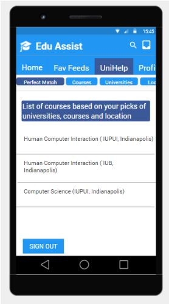
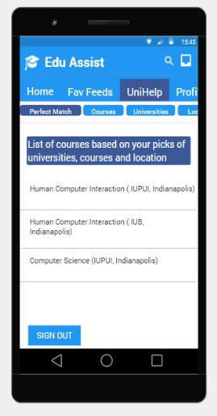
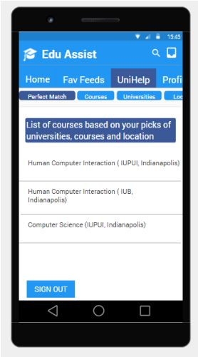
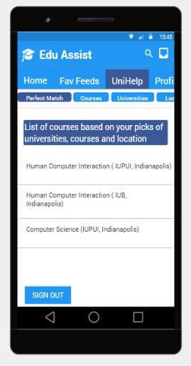
 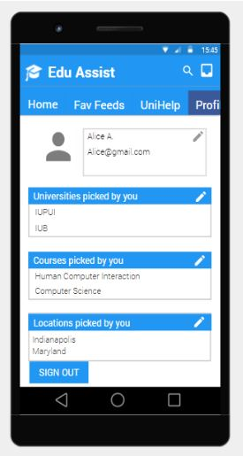
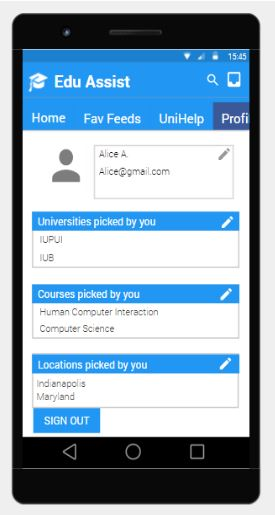
 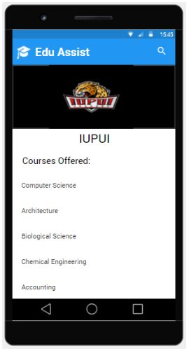
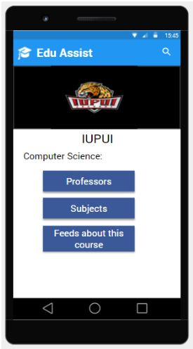
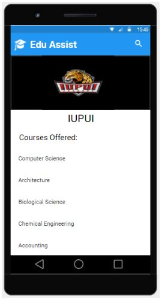
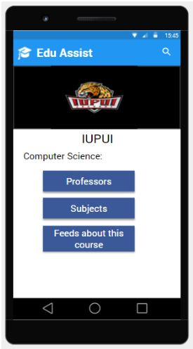
 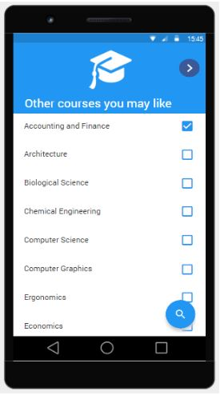
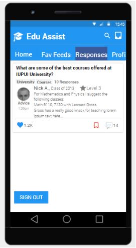
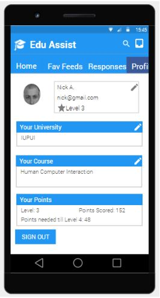
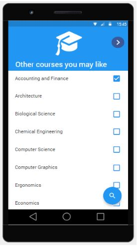
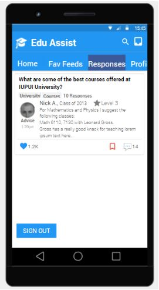
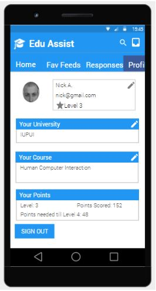